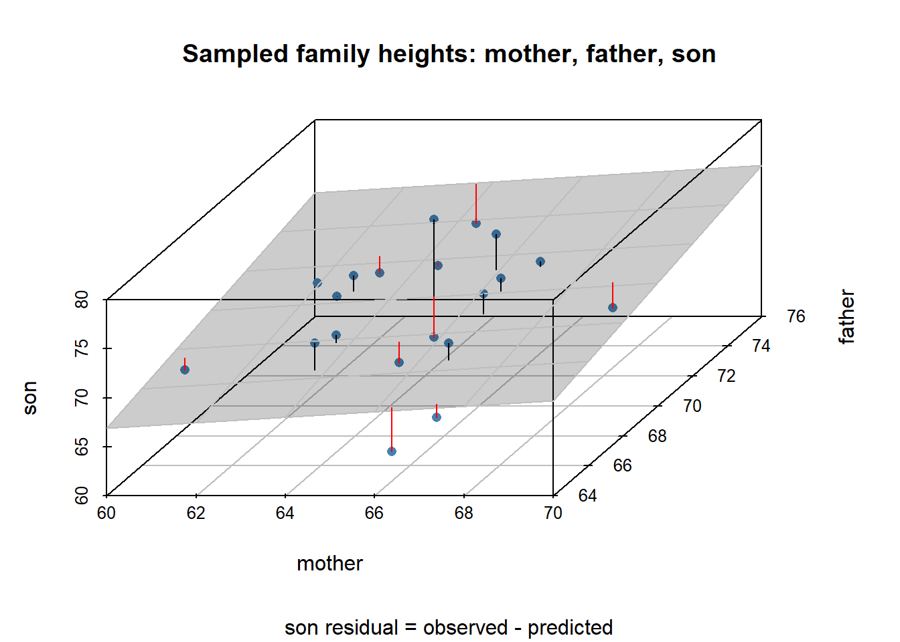

| family | father | mother | child | gender |
|---|---|---|---|---|
| 001 | 78.5 | 67.0 | 73.2 | male |
| 002 | 75.5 | 66.5 | 73.5 | male |
| 003 | 75.0 | 64.0 | 71.0 | male |
| 004 | 75.0 | 64.0 | 70.5 | male |
| 005 | 75.0 | 58.5 | 72.0 | male |
| 006 | 74.0 | 68.0 | 69.5 | female |
6 Linear Algebra for Fitting Models to Data
Vectors and matrices are the central objects of linear algebra. And central to data science and machine learning is the notion of a data matrix, in which each row is composed of different types of values that represent a single case of data. For example, a single row of a data matrix might represent the recorded characteristics of an individual participant, item, or unit in some study. In contrast, each column (known as a feature vector or data variable) represents multiple instances of just one of these prescribed types of value. 1 Let’s consider some examples.
6.1 Data Examples
6.1.1 Heights of Parents and Oldest Child
In 1885 Sir Francis Galton examined the heights (in inches) of parents and their adult children to determine the strength of evidence to support height as a hereditary trait. The corresponding R data set HistData::GaltonFamilies consists of 934 adult children from a total of 205 families. Restricting attention to the oldest child in each family, there were 26 daughters and 179 sons.
The table below shows a portion of this data matrix. Each row represents a family and consists of: a family identifier, the father’s height, the mother’s height, the oldest child’s height, and the oldest child’s gender.
The figure below represents all the families, with the gender of the oldest child distinguished by color: red for daughters and blue for sons.
In Chapter 2 we regressed the son’s height on the father’s height. We obtained the regression line, which approximates the graph of averages: the average son’s height per father’s height. The linear regression can be interpreted as a linear prediction of the height of a son whose father is of some given height.
We can now expand on this idea by regressing the son’s height on the heights of both the mother and the father. This is a model in which the predicted son’s height, \(\hat{s}\), is some constant plus some linear combination of the parents’ heights.
\[ \begin{align} \hat{s} & = \mathcal{l}_{R}(m, f) \\ &= \beta_0 \; + \; \beta_m \times m \; + \; \beta_f \times f \end{align} \qquad(6.1)\]
where
\[ \begin{align} \hat{s} &= \text{predicted height of son} \\ m &= \text{height of mother} \\ f &= \text{height of father} \end{align} \qquad(6.2)\]
Each set of coefficient values determines some plane in the 3-dimensional space of (mother, father, son) heights. The coefficients \((\hat{\beta}_0, \hat{\beta}_m, \hat{\beta}_f)\) obtained by linear regression determine the regression plane (Figure 6.2) that gives the best linear approximation \((\hat{s})\) to the son’s height for a given pair of parent heights \((m, f)\). 2

In vector-matrix notation we are seeking a vector \((\hat{\beta}_0, \hat{\beta}_m, \hat{\beta}_f)\) of coefficient values that yields the least-squares solution to the following linear approximation problem.
\[ \begin{align} s_\bullet &\approx (1_\bullet, m_\bullet, f_\bullet) \times \begin{pmatrix} \hat{\beta}_0 \\ \hat{\beta}_m \\ \hat{\beta}_f \end{pmatrix} \end{align} \qquad(6.3)\]
where
\[ \begin{align} s_\bullet &= \text{data column vector: heights of sons} \\ 1_\bullet &= \text{column vector } (1, \ldots, 1) \\ m_\bullet &= \text{data column vector: heights of mothers} \\ f_\bullet &= \text{data column vector: heights of fathers} \end{align} \qquad(6.4)\]
This is a statistical estimation problem that corresponds to the following linear algebra problem and notation.
\[ \begin{align} b_\bullet &\approx A_{\bullet, \bullet} \times x_\bullet \end{align} \qquad(6.5)\]
where
\[ \begin{align} b_\bullet &= s_\bullet \\ A_{\bullet, \bullet} &= (1_\bullet, m_\bullet, f_\bullet) \\ x_\bullet &= (\hat{\beta}_0, \hat{\beta}_m, \hat{\beta}_f) \end{align} \qquad(6.6)\]
It turns out that the least squares solution \((\hat{\beta}_0, \hat{\beta}_m, \hat{\beta}_f)\) can be obtained as the vector of coefficients of an orthogonal projection of vector \(s_\bullet\) onto the 3-dimensional subspace spanned by vectors \((1_\bullet, m_\bullet, f_\bullet)\). More on this later.
6.1.2 Survey Data: Better Life Index
We now turn to a data set having several data columns, namely the OECD’s Better Life Index (BLI). 3 The following table shows a portion of the data.
# A tibble: 42 × 26
code country CG_SENG CG_VOTO EQ_AIRP EQ_WATER ES_EDUA ES_EDUEX ES_STCS
<chr> <chr> <dbl> <dbl> <dbl> <dbl> <dbl> <dbl> <dbl>
1 AUS Australia 2.7 92 6.7 92 84 20 499
2 AUT Austria 1.3 76 12.2 92 86 17 491
3 BEL Belgium 2 88 12.8 79 80 19 500
4 BRA Brazil 2.2 80 11.7 70 57 16 400
5 CAN Canada 2.9 68 7.1 90 92 17 517
6 CHE Switzerland 2.3 45 10.1 96 89 17 498
# ℹ 36 more rows
# ℹ 17 more variables: HO_HISH <dbl>, HS_LEB <dbl>, HS_SFRH <dbl>,
# IW_HADI <dbl>, IW_HNFW <dbl>, JE_EMPL <dbl>, JE_LMIS <dbl>, JE_LTUR <dbl>,
# JE_PEARN <dbl>, PS_FSAFEN <dbl>, PS_REPH <dbl>, SC_SNTWS <dbl>,
# SW_LIFS <dbl>, WL_EWLH <dbl>, WL_TNOW <dbl>, HO_BASE <dbl>, HO_NUMR <dbl>Each row of this data matrix gives specified measurements of an identified country. The first two columns give, respectively, each country’s OECD code and name. The remaining 24 columns are measures pertaining to the well-being of the populace.
The column name of each measures consists of a two-letter prefix followed by a suffix. The prefix is associated with a broad indicator of social well-being. The suffix pertains to a particular component of this indicator. Here is an expansion of these prefixes.
| prefix | name | n_comps | components |
|---|---|---|---|
| CG | Civic Engagement | 2 | CG_SENG, CG_VOTO |
| EQ | Environmental Quality | 2 | EQ_AIRP, EQ_WATER |
| ES | Education System | 3 | ES_EDUA, ES_EDUEX, ES_STCS |
| HO | Housing | 3 | HO_BASE, HO_HISH, HO_NUMR |
| HS | Health Status | 2 | HS_LEB, HS_SFRH |
| IW | Income and Wealth | 2 | IW_HADI, IW_HNFW |
| JE | Jobs Employment | 4 | JE_EMPL, JE_LMIS, JE_LTUR, JE_PEARN |
| PS | Personal Safety | 2 | PS_FSAFEN, PS_REPH |
| SC | Social Connections | 1 | SC_SNTWS |
| SW | Subjective Well-Being | 1 | SW_LIFS |
| WL | Work Life Balance | 2 | WL_EWLH, WL_TNOW |
The component indicators (corresponding to the suffix of the column name) are elaborated in the following table.
| prefix | suffix | unit | name | description |
|---|---|---|---|---|
| CG | SENG | AVSCORE | Stakeholder Engagement | Extent to which people can engage with government in rule-making |
| CG | VOTO | PC | Voter Turnout | Percent of registered voters who voted in recent elections |
| EQ | AIRP | MICRO_M3 | Air Pollution | Concentration of PM2.5 particulate matter (micrograms per cubic meter) |
| EQ | WATER | PC | Water Quality | Percent satisfied with water quality |
| ES | EDUA | PC | Educational Attainment | Percent aged 25-64 with at least upper-secondary education |
| ES | EDUEX | YR | Expected Years of Education | Expected years of schooling |
| ES | STCS | AVSCORE | Student Cognitive Skills | PISA scores in reading, mathematics, and science |
| HO | BASE | PC | Dwellings w/o Basic Facilities | Percentage of dwellings that lack basic sanitary facilities |
| HO | HISH | PC | Housing Expenditure | Percentage of household gross adjusted disposable income spent on housing |
| HO | NUMR | RATIO | Rooms per Person | Number of rooms per person in dwelling |
| HS | LEB | YR | Life Expectancy at Birth | Average number of years a person can expect to live |
| HS | SFRH | PC | Self-Reported Health | Percentage who report being in good or very good health |
| IW | HADI | USD | Household Adjusted Disposable Income | Average household income after taxes |
| IW | HNFW | USD | Household Net Financial Wealth | Household net financial wealth (financial assets minus liabilities) |
| JE | EMPL | PC | Employment Rate | Percentage of people aged 15-64 in paid employment |
| JE | LMIS | PC | Labour Market Insecurity | Expected loss of earnings if someone becomes unemployed |
| JE | LTUR | PC | Long-Term Unemployment Rate | Percentage unemployed for 12+ months |
| JE | PEARN | USD | Personal Earnings | Average annual earnings per full-time employee |
| PS | FSAFEN | PC | Feeling Safe Walking Alone at Night | Percentage who feel safe |
| PS | REPH | RATIO | Homicide Rate | Deaths per 100,000 people |
| SC | SNTWS | PC | Support Network Quality | Percentage who believe they have someone to rely on in times of need |
| SW | LIFS | AVSCORE | Life Satisfaction | Average self-evaluation on a scale from 0 to 10 |
| WL | EWLH | PC | Employees Working Long Hours | Percentage of employees working 50+ hours per week |
| WL | TNOW | HOUR | Time Devoted to Leisure and Personal Care | Hours per day spent on leisure, personal care, eating, and sleeping |
The unit column in the above table gives the unit of measure, with PC meaning percent, YR meaning number of years, and so on.
We now turn to a statistical and algebraic treatment of the BLI data matrix of Table 6.2. Consider the indicator component SW_LIFS (Life Satisfaction) as a response variable, with the remaining 23 indicator components serving as explanatory variables. As with the previous data example, we want to approximate or predict the response variable by a constant \(\beta_0\) plus a linear combination of the explantory variables, as follows.
\[ \begin{align} L_\bullet &\approx (1_\bullet, C_{1, \bullet}, \ldots, C_{d, \bullet}) \times \begin{pmatrix} \hat{\beta}_0 \\ \hat{\beta}_1 \\ \vdots \\ \hat{\beta}_d \end{pmatrix} \end{align} \qquad(6.7)\]
where
\[ \begin{align} L_\bullet &= \text{life satisfaction indicator per country} \\ 1_\bullet &= \text{column vector } (1, \ldots, 1) \\ C_{k, \bullet} &= k^{th} \text{ indicator component per country} \\ d &= \text{number of explanatory indicators} \end{align} \qquad(6.8)\]
We now have more explanatory variables than in the previous example, a fact that merits some comment.
On the one hand, the approach to determining least-squares regression coefficients \(\hat{\beta}_0, \ldots, \hat{\beta}_d\) is unchanged. We project the response vector, now \(L_\bullet\), onto the space spanned by the constant vector \(1_\bullet\) along with the explanatory variables, that is onto the space spanned by \((1_\bullet, C_{1, \bullet}, \ldots, C_{d, \bullet})\). The fitted coefficients yield a function of the explanatory variables that forms a regression hyperplane of dimension 23 that passes through a cloud of data points, \((C_{1, \bullet}, \ldots, C_{d, \bullet}, L_\bullet)\), in a space of dimension 24.
On the other hand, we are now estimating 24 regression coefficients based on observations from just 42 countries. From a statistical perspective, this paucity of observations relative to the number of estimates leads to large standard errors for the set of estimated coefficients. From the perspective of numerical linear algebra, the vector of fitted coefficients \((\hat{\beta}_0, \ldots, \hat{\beta}_d)\) is less stable (more sensitive to error in the data) than it was in the previous example.
6.1.3 MNIST: Images of Handwritten Digits
The MNIST database (Modified National Institute of Standards and Technology database) is a large database of handwritten decimal digits consisting of 60,000 training images and 10,000 testing images. 4
The history of this database goes back to 1988, when the US Postal Service constructed images of digits appearing on handwritten zip codes. Around the same time the US Census Bureau requested NIST to evaluate optical character recognition (OCR) systems. In 1992, NIST and the Census Bureau sponsored a competition in which participating teams were given images of Handwriting Sample Forms (HSFs), including handwritten decimal digits. The initial version of MNIST was constructed sometime before summer 1994.
Here’s an example of each handwritten digit from the training set of images.
Each image is represented by a \(28 \times 28\) matrix of pixels, with each pixel represented as a grayscale integer value from 0 through 255. That is, each image represents a single vector in a space of dimension 784 (since \(28 \times 28 = 784\)).
The 1992 competition prompted the development of algorithms to determine the decimal digit represented by any such image. This is a classification problem: to label each case of data (image) as belonging to one of several possible categories (decimal digits).
One such method, multinomial logistic regression, assigns a probability that a given image represents a specified digit, resulting in a 10-element probability vector per image. 5
6.1.3.1 Multinomial Logistic Regression
To formulate the model, we convert the representation of an image from a \(28 \times 28\) matrix of pixels into a vector of pixels of length 784. 6 We’ll denote such a vector as \((P_1, \ldots, P_d)\), where \(d = 784\).
Let \(D\) denote the digit represented by the image. The ordering of the digits from 0 through 9 is not directly relevant to the image-recognition problem, so let us regard \(D\) as a categorical variable having the set \(\{ 0, 1, \ldots, 9 \}\) as possible values. An alternative representation is the set of indicator vectors \(e_0 = (1, 0, \ldots, 0)\) through \(e_9 = (0, 0, \ldots, 1)\), called “one-hot encoding” in machine learning. 7
Then the multinomial logistic regression model can be formulated as follows.
\[ \begin{align} \log_e{ \frac{P(D = \nu)}{P(D = 0)} } &= (1, P_1, \ldots, P_d) \times \begin{pmatrix} \beta_0^{(\nu)} \\ \beta_1^{(\nu)} \\ \vdots \\ \beta_d^{(\nu)} \end{pmatrix} & \text{ for } \nu \in \{ 1, \ldots, 9 \} \end{align} \qquad(6.9)\]
with
\[ \begin{align} P(D = 0) &= 1 - \sum_{\nu = 1}^9 P(D = \nu) \end{align} \qquad(6.10)\]
For a more compact notation let \(X_{\bullet} = (1, P_1, \ldots, P_d)\) and let \(\beta_{\bullet}^{(\nu)} = (\beta_0^{(\nu)}, \beta_1^{(\nu)}, \ldots, \beta_d^{(\nu)})\), with the inner product 8 of these two vectors denoted as \(X_{\bullet} \boldsymbol\cdot \beta_{\bullet}^{(\nu)}\). Then we have
\[ \begin{align} \log_e{ \frac{P(D = \nu)}{P(D = 0)} } &= X_{\bullet} \boldsymbol\cdot \beta_{\bullet}^{(\nu)} & \text{ for } \nu \in \{ 1, \ldots, 9 \} \end{align} \qquad(6.11)\]
Exponentiation of Equation 6.11 gives:
\[ \begin{align} \{ P(D = \nu) \} &= \{ P(D = 0) \} \times e^{X_{\bullet} \boldsymbol\cdot \beta_{\bullet}^{(\nu)}} & \text{ for } \nu \in \{ 1, \ldots, 9 \} \end{align} \qquad(6.12)\]
Taking the sum over \(\nu\) we have:
\[ \begin{align} \sum_{\nu = 1}^9 {P(D = \nu)} &= \{ P(D = 0) \} \times \sum_{\nu = 1}^9 e^{X_{\bullet} \boldsymbol\cdot \beta_{\bullet}^{(\nu)}} \end{align} \qquad(6.13)\]
Now applying Equation 6.10 we have
\[ \begin{align} \left \{ 1 - P(D = 0) \right \} &= \{ P(D = 0) \} \times \sum_{\nu = 1}^9 e^{X_{\bullet} \boldsymbol\cdot \beta_{\bullet}^{(\nu)}} \end{align} \qquad(6.14)\]
which yields:
\[ \begin{align} P(D = 0) &= \frac{1} { 1 + \sum_{\nu = 1}^9 e^{X_{\bullet} \boldsymbol\cdot \beta_{\bullet}^{(\nu)}} } \end{align} \qquad(6.15)\]
Applying Equation 6.12 gives:
\[ \begin{align} P(D = \nu) &= \frac{ e^{X_{\bullet} \boldsymbol\cdot \beta_{\bullet}^{(\nu)}} } { 1 + \sum_{\mu = 1}^9 e^{X_{\bullet} \boldsymbol\cdot \beta_{\bullet}^{(\mu)}} } & \text{ for } \nu \in \{ 1, \ldots, 9 \} \end{align} \qquad(6.16)\]
6.1.3.2 Matrix Representation
Equation 6.11 pertains to the probability that a single image represents a single digit \(\nu \in \{1, \ldots, 9 \}\). Therefore, in a data set of \(n\) images, with \(i\) denoting the index of a particular image, we have:
\[ \begin{align} \log_e{ \frac{P(D_i = \nu)}{P(D_i = 0)} } &= X_{i, \bullet} \boldsymbol\cdot \beta_{\bullet}^{(\nu)} \end{align} \qquad(6.17)\]
Expanding the last equation to matrix notation, with \(i\) as the row index and \(\nu\) as a column index, we have
\[ \begin{align} & \begin{pmatrix} \log_e{ \frac{P(D_1 = 1)}{P(D_1 = 0)} }, & \ldots, & \log_e{ \frac{P(D_1 = 9)}{P(D_1 = 0)} } \\ \vdots & \vdots & \vdots \\ \log_e{ \frac{P(D_n = 1)}{P(D_n = 0)} }, & \ldots, & \log_e{ \frac{P(D_n = 9)}{P(D_n = 0)} } \end{pmatrix} \\ \\ &= \begin{pmatrix} X_{1, \bullet} \\ \vdots \\ X_{n, \bullet} \end{pmatrix} \begin{pmatrix} \beta_{\bullet}^{(1)}, & \ldots, & \beta_{\bullet}^{(9)} \end{pmatrix} \end{align} \qquad(6.18)\]
The matrix on the left side of Equation 6.18 has dimensions \(n \times 9\). On the right side, the first matrix factor has dimensions \(n \times 785\), and the second matrix factor has dimensions \(785 \times 9\).
6.2 Notation
The preceding section introduced example data sets along with corresponding linear regression models of the following form.
\[ \begin{align} y &= X \; \beta \; + \; \epsilon \end{align} \qquad(6.19)\]
Each of the elements of Equation 6.19 has alternative names, including the following. 9
\[ \begin{align} y &= \text{a } \textit{response, target,} \text{ or } \textit{labeling} \text{ variable} \\ X &= \text{feature matrix of } \textit{explanatory, predictor,} \text{ or } \textit{feature} \text{ variables} \\ \beta &= \text{a vector of model } \textit{coefficients} \text{ or } \textit{parameters} \\ \epsilon &= \text{an } \textit{error} \text{ or } \textit{residual} \text{ term} \end{align} \qquad(6.20)\]
This linear regression format follows the more general mathematical notation \(y = f(x)\). In data science and machine learning, however, the response variable \(y\) and the feature matrix \(X\) have known values, whereas \(\beta\) and \(\epsilon\) are fit (determined or evaluated based on \(y\) and \(X\)) over the course of the modeling process.
In the data examples of the preceding section, the response variable took the following form.
- Family heights: \(y =\) oldest child’s height
- Better Life Index: \(y =\) the Life Satisfaction indicator
- MNIST: \(y =\) a probability vector \(\{ P(D = \nu) \}_{\nu = 0}^9\) assigned to each image
The MNIST example illustrates a vector-valued rather than scalar-valued response variable.
If the data include a labeling or response variable, \(y\), then the problem is said to be supervised. In unsupervised problems (that lack a \(y\) variable), we may need to find patterns in the given data. For example we may seek those feature variables (columns of the feature matrix \(X\)), or linear combinations of feature variables, that account for most of the variability in the entire set of feature variables. Or we may need to find observations (rows of the feature matrix \(X\)) that are similar and thereby form groups (or clusters) of observations. In these unsupervised situations we may model the feature matrix (or its covariance matrix) as the product of other matrices of special form (to be discussed later in this chapter).
In the remainder of this chapter we will focus on ideas and methods that help us to solve Equation 6.19, or rather, that help us to determine the value of \(\beta\) that minimizes (in some sense) the residual term \(\epsilon\).
6.3 Geometry
In this section we’ll discuss the example of family heights, in particular the linear regression of the son’s height on the heights of the mother and father. We’ll discuss the geometry of the least-squares solution as a reference point for the remainder of this chapter.
6.3.1 Family heights
Here’s the linear regression problem in matrix format.
\[ \begin{align} y_\bullet &= X_{_\bullet, _\bullet} \; \beta_\bullet \; + \; \epsilon_\bullet \end{align} \qquad(6.21)\]
where
\[ \begin{align} y_\bullet &= \text{heights of sons } = s_\bullet \\ m_\bullet &= \text{heights of mothers } \\ f_\bullet &= \text{heights of fathers } \\ X_{_\bullet, _\bullet} &= \text{feature matrix} = (1_\bullet, m_\bullet, f_\bullet) \\ \beta_\bullet &= \text{coefficient vector} = (\beta_0, \beta_1, \beta_2)^\top \\ \epsilon_\bullet &= \text{residual vector} \end{align} \qquad(6.22)\]
Consider the least-squares estimate \(\hat{\beta}_\bullet\) and the consequent predicted height \(\hat{y}_\bullet = X_{_\bullet, _\bullet} \hat{\beta}_\bullet\) of the son. Figure 6.4 is based on a random sample of 20 families and shows the heights of sons on the vertical axis, along with their vertical displacement (residual) from the predicted value lying on the regression plane. 10

Figure 6.4 represents individual rows of data, \(\{ (m_i, f_i, s_i) \}_{i = 1}^n\) along with model predictions \((\hat{s} = \hat{\beta}_0 + \hat{\beta}_1 m + \hat{\beta}_2 f)\) and residuals \((\hat{\epsilon} = s - \hat{s})\) in three-dimensional \((m, f, s)\) space.
To gain more insight into linear regression we’ll first reduce the regression problem to the simple case in which the response variable and the predictor variables have all been coerced to have an average value of zero, a process called centering. This will eliminate the need for the intercept coefficient, \(\beta_0\), and consequently eliminate the need to include the constant vector \(1_\bullet\) in the feature matrix \(X_{_\bullet, _\bullet}\).
6.3.2 Centering Data Vectors
The regression plane that we glimpse in Figure 6.4 actually spans all the \((m, f)\) combinations that are mathematically possible. If we imagine infinitesimally short parents with \((m, f) = (0, 0)\), the predicted height of their son would be \(\hat{\beta}_0\), which is not zero. That is, the plane does not pass through the origin \((0, 0, 0)\) and therefore does not qualify as a subspace of \((m, f, s)\) space. 11 But the regression plane determines a parallel subspace (that does pass through the origin).
The concept of a subspace is central to linear algebra. Therefore determining the subspace parallel to the regression plane will enable us to apply linear algebra methods to better understand linear regression.
One way to generate this subspace is to center each of the \((m_i, f_i, s_i)\) data values, that is, to replace data value \(v_i\) with its centered version \(\dot{v}_i = v_i - \bar{v}\), where \(\bar{v}\) denotes the average value (arithmetic mean) of vector \(v_\bullet\). 12
Now it turns out that the regression plane passes through the theoretical point of averages, \((\bar{m}, \bar{f}, \bar{s})\). If we were to center the \((m_\bullet, f_\bullet, s_\bullet)\) vectors, and regress the centered son’s height against centered versions of the (mother, father) heights, the new regression plane would pass through the origin and thus qualify as a subspace. That is, the fitted intercept coefficient of the centered regression problem must be zero. Therefore we can eliminate the intercept coefficient from the centered linear model, and we can also eliminate the constant vector \(1_\bullet\) from the feature matrix \(X_{_\bullet, _\bullet}\). Then we have the following centered linear model.
\[ \begin{align} \dot{y}_\bullet &= \dot{X}_{_\bullet, _\bullet} \; \beta_\bullet \; + \; \epsilon_\bullet \end{align} \qquad(6.23)\]
where
\[ \begin{align} \dot{y}_\bullet &= \text{centered heights of sons } = \dot{s}_\bullet \\ \dot{m}_\bullet &= \text{centered heights of mothers } \\ \dot{f}_\bullet &= \text{centered heights of fathers } \\ \dot{X}_{_\bullet, _\bullet} &= \text{centered feature matrix} = (\dot{m}_\bullet, \dot{f}_\bullet) \\ \beta_\bullet &= \text{coefficient vector} = (\beta_1, \beta_2)^\top \\ \epsilon_\bullet &= \text{residual vector} \end{align} \qquad(6.24)\]
Figure 6.5 is a version of Figure 6.4 corresponding to Equation 6.23. Geometrically it’s the same figure, the difference being that each of the three axes has been shifted, now with 0 as the central value.
6.3.3 Least Squares Solutions
Having centered the data, let’s discuss least-squares linear regression, which determines coefficient values \((\hat{\beta}_0, \hat{\beta}_1)\) that minimize the sum of squared residuals.
\[ \begin{align} \sum_{i = 1}^n \epsilon_i^2 &= \lVert \epsilon_\bullet \rVert^2 \\ &= \epsilon_\bullet^\top\epsilon_\bullet \\ &= (\dot{y}_\bullet - \dot{X}_{\bullet, \bullet} \beta_\bullet)^\top (\dot{y}_\bullet - \dot{X}_{\bullet, \bullet} \beta_\bullet) \end{align} \qquad(6.25)\]
To find coefficient values that minimize this sum of squares, one can take derivatives of the above expression with respect to \(\beta_\bullet\) and set that result to zero, which yields the following normal equations:
\[ \begin{align} \dot{X}_{\bullet, \bullet}^\top \dot{X}_{\bullet, \bullet} \hat{\beta}_\bullet &= \dot{X}_{\bullet, \bullet}^\top \dot{y}_\bullet \end{align} \qquad(6.26)\]
On the left side of the normal equations we have the matrix factor \(\left ( \dot{X}_{\bullet, \bullet}^\top \dot{X}_{\bullet, \bullet} \right )\), which in our case is a multiple of the (mother, father) covariance matrix, a \(2 \times 2\) non-negative-definite matrix. In fact the matrix is positive-definite, and thus invertible, provided only that parental heights are not perfectly correlated (which they are not). Then we can invert this matrix to solve for \(\hat{\beta}_\bullet\).
\[ \begin{align} \hat{\beta}_\bullet &= \left ( \dot{X}_{\bullet, \bullet}^\top \dot{X}_{\bullet, \bullet} \right )^{-1} \dot{X}_{\bullet, \bullet}^\top \dot{y}_\bullet \end{align} \qquad(6.27)\]
The predicted vector \(\hat{\dot{y}}_\bullet\) is thus:
\[ \begin{align} \hat{\dot{y}}_\bullet &= \dot{X}_{\bullet, \bullet} \hat{\beta}_\bullet \\ &= \dot{X}_{\bullet, \bullet} \left ( \dot{X}_{\bullet, \bullet}^\top \dot{X}_{\bullet, \bullet} \right )^{-1} \dot{X}_{\bullet, \bullet}^\top \dot{y}_\bullet \end{align} \qquad(6.28)\]
6.3.4 Orthogonal Projections
For any value of the coefficient vector \(\beta_\bullet\), the mapping \(\beta_\bullet \mapsto \dot{X}_{\bullet, \bullet} \beta_\bullet\) sends \(\beta_\bullet\) to the linear combination \(\beta_1 \; \dot{m}_\bullet \; + \; \beta_2 \; \dot{f}_\bullet\), which belongs to a 2-dimensional subspace of \(n-\)space 13, where \(n\) denotes the number of data cases, i.e., the row dimension of \(\dot{X}_{\bullet, \bullet}\). This 2-dimensional subspace (let’s say the “parental” subspace) is spanned by the two \(n-\)vectors \((\dot{m}_\bullet, \dot{f}_\bullet)\), the centered vectors of (mother, father) heights.
The particular coefficient vector \(\hat{\beta}_\bullet\) obtained by least squares linear regression produces the linear mapping of Equation 6.28:
\[ \begin{align} \hat{\dot{y}}_\bullet &= P \; \dot{y}_\bullet \end{align} \qquad(6.29)\]
This mapping sends the centered heights of sons \(\dot{y}_\bullet\) to their corresponding linear prediction \(\hat{\dot{y}}_\bullet = P \; \dot{y}_\bullet\), where \(P\) is the following matrix.
\[ \begin{align} P &= \dot{X}_{\bullet, \bullet} \left ( \dot{X}_{\bullet, \bullet}^\top \dot{X}_{\bullet, \bullet} \right )^{-1} \dot{X}_{\bullet, \bullet}^\top \end{align} \qquad(6.30)\]
Matrix \(P\) is idempotent and symmetric, that is, both the square \(P^2\) and the transpose \(P^\top\) equal \(P\).
\[ \begin{align} P^2 &= \left \{ \dot{X}_{\bullet, \bullet} \left ( \dot{X}_{\bullet, \bullet}^\top \dot{X}_{\bullet, \bullet} \right )^{-1} \dot{X}_{\bullet, \bullet}^\top \right \} \left \{ \dot{X}_{\bullet, \bullet} \left ( \dot{X}_{\bullet, \bullet}^\top \dot{X}_{\bullet, \bullet} \right )^{-1} \dot{X}_{\bullet, \bullet}^\top \right \} \\ &= \dot{X}_{\bullet, \bullet} \left ( \dot{X}_{\bullet, \bullet}^\top \dot{X}_{\bullet, \bullet} \right )^{-1} \dot{X}_{\bullet, \bullet}^\top \\ &= P \\ \\ P^\top &= \left \{ \dot{X}_{\bullet, \bullet} \left ( \dot{X}_{\bullet, \bullet}^\top \dot{X}_{\bullet, \bullet} \right )^{-1} \dot{X}_{\bullet, \bullet}^\top \right \}^\top \\ &= \dot{X}_{\bullet, \bullet} \left ( \dot{X}_{\bullet, \bullet}^\top \dot{X}_{\bullet, \bullet} \right )^{-1} \dot{X}_{\bullet, \bullet}^\top \\ &= P \end{align} \qquad(6.31)\]
If matrix \(M\) is idempotent, that is, if \(M^2 = M\), then \(M\) represents a projection. Repeated applications of \(M\) to vector \(v\) return the initial application, i.e., \(M^k v = Mv\) for any positive integer \(k\).
If in addition matrix \(M\) is symmetric, that is, if \(M^\top = M\), then \(M\) represents an orthogonal projection. In this case the complement of \(M\), \(I - M\), also qualifies as an orthogonal projection and the product of the two matrices is the zero matrix.
Consequently, any vector \(v\) can be expressed as the sum of two vectors \(v = x + y\), with \(x = M v\) and \(y = (I-M) v\). Vector \(x\) belongs to the subspace generated by \(M\), which is called the range of \(M\), denoted as \(\mathcal{R} (M)\). Similarly \(y \in \mathcal{R} (I - M)\). Moreover, these two vectors are orthogonal: \((x^\top y = y^\top x = 0)\). That is, subspace \(\mathcal{R} (I - M)\) is the orthogonal complement of subspace \(\mathcal{R} (M)\).
Let’s apply these ideas to matrix \(P\). First, we have shown that matrix \(P\) represents an orthogonal projection. On closer inspection, we can show that the subspace generated by \(P\), \(\mathcal{R} (P)\), is the parental subspace. That is, for any vector \(v_\bullet\) we have:
\[ \begin{align} P \; v_\bullet &= \dot{X}_{\bullet, \bullet} \left ( \dot{X}_{\bullet, \bullet}^\top \dot{X}_{\bullet, \bullet} \right )^{-1} \dot{X}_{\bullet, \bullet}^\top \; v_\bullet \\ &= \dot{X}_{\bullet, \bullet} \left \{ \left ( \dot{X}_{\bullet, \bullet}^\top \dot{X}_{\bullet, \bullet} \right )^{-1} \dot{X}_{\bullet, \bullet}^\top \; v_\bullet \right \} \\ &= \dot{X}_{\bullet, \bullet} \left \{ \left ( \dot{X}_{\bullet, \bullet}^\top \dot{X}_{\bullet, \bullet} \right )^{-1} \begin{pmatrix} \dot{m}_{\bullet}^\top \; v_\bullet \\ \dot{f}_{\bullet}^\top \; v_\bullet \end{pmatrix} \right \} \\ &= \dot{X}_{\bullet, \bullet} \; \gamma_\bullet (v_\bullet) \end{align} \qquad(6.32)\]
That is, for any vector \(v_\bullet\) in \(n-\)space, \(P\) sends \(v_\bullet\) to an \(n-\)vector of the form \(\dot{X}_{\bullet, \bullet} \; \gamma_\bullet\), which is a linear combination of \((\dot{m}_\bullet, \dot{f}_\bullet)\) and thus belongs to the parental subspace.
In our example, this means that the respective vectors of predicted centered heights \(\hat{\dot{y}_\bullet}\) and their residuals \(\hat{\epsilon}_\bullet\) are mutually orthogonal.
\[ \begin{align} \hat{\dot{y}}_\bullet &= P \; \dot{y}_\bullet \\ \\ \hat{\epsilon}_\bullet &= \dot{y}_\bullet - \hat{\dot{y}}_\bullet \\ &= (I - P) \; \dot{y}_\bullet \\ \\ \hat{\epsilon}_\bullet^\top \; \dot{y}_\bullet &= \dot{y}_\bullet^\top \; (I - P)^\top P \; \dot{y}_\bullet \\ &= \dot{y}_\bullet^\top \; (I - P) \; P \; \dot{y}_\bullet \\ &= \dot{y}_\bullet^\top \; (P - P^2) \; \dot{y}_\bullet \\ &= \dot{y}_\bullet^\top \; 0_{\bullet, \bullet} \; \dot{y}_\bullet \\ &= 0 \end{align} \qquad(6.33)\]
Now let \(p_\bullet\) be any vector in the parental space. Then \(p_\bullet\) is some linear combination of the parental vectors \((\dot{m}_\bullet, \dot{f}_\bullet)\) and therefore can be represented as \(p_\bullet = \dot{X}_{\bullet, \bullet} \gamma_\bullet\) for some coefficient vector \(\gamma_\bullet = (\gamma_1, \gamma_2)^\top\). It now follows the \(P \; p_\bullet = p_\bullet\):
\[ \begin{align} P \; p_\bullet &= P \; (\dot{X}_{\bullet, \bullet} \gamma_\bullet) \\ &= \dot{X}_{\bullet, \bullet} \left ( \dot{X}_{\bullet, \bullet}^\top \dot{X}_{\bullet, \bullet} \right )^{-1} \dot{X}_{\bullet, \bullet}^\top \; (\dot{X}_{\bullet, \bullet} \gamma_\bullet) \\ &= \dot{X}_{\bullet, \bullet} \left ( \dot{X}_{\bullet, \bullet}^\top \dot{X}_{\bullet, \bullet} \right )^{-1} \left ( \dot{X}_{\bullet, \bullet}^\top \; \dot{X}_{\bullet, \bullet} \right ) \gamma_\bullet \\ &= \dot{X}_{\bullet, \bullet} \gamma_\bullet \\ &= p_\bullet \end{align} \qquad(6.34)\]
Consequently, the residual vector \(\hat{\epsilon}_\bullet\) is orthogonal to any vector \(p_\bullet = \dot{X}_{\bullet, \bullet} \gamma_\bullet\) in the parental subspace:
\[ \begin{align} \hat{\epsilon}_\bullet^\top \; p_\bullet &= \dot{y}_\bullet^\top \; (I - P)^\top p_\bullet \\ &= \dot{y}_\bullet^\top \; (I - P) \; p_\bullet \\ &= \dot{y}_\bullet^\top \; 0_\bullet \\ &= 0 \end{align} \qquad(6.35)\]
It now follows that of all vectors \(p_\bullet = \dot{X}_{\bullet, \bullet} \gamma_\bullet\) in the parental subspace, the predicted vector \(\hat{\dot{y}}_\bullet\) is closest to the given vector \(\dot{y}_\bullet\):
\[ \begin{align} \lVert \dot{y_\bullet} - p_\bullet \rVert^2 &= \lVert (\dot{y_\bullet} - \hat{\dot{y}}_\bullet) + (\hat{\dot{y}}_\bullet - p_\bullet) \rVert^2 \\ &= \lVert \hat{\epsilon}_\bullet + (\hat{\dot{y}}_\bullet - p_\bullet) \rVert^2 \\ &= \left ( \hat{\epsilon}_\bullet + (\hat{\dot{y}}_\bullet - p_\bullet) \right )^\top \left ( \hat{\epsilon}_\bullet + (\hat{\dot{y}}_\bullet - p_\bullet) \right ) \\ &= \hat{\epsilon}_\bullet^\top \hat{\epsilon}_\bullet \; + \; 0 \; + \; 0 \; + \; (\hat{\dot{y}}_\bullet - p_\bullet)^\top (\hat{\dot{y}}_\bullet - p_\bullet) \\ &= \lVert \hat{\epsilon}_\bullet \rVert^2 \; + \; \lVert \hat{\dot{y}}_\bullet - p_\bullet \rVert^2 \\ &\ge \lVert \hat{\epsilon}_\bullet \rVert^2 \\ &= \lVert \dot{y_\bullet} - \hat{\dot{y}}_\bullet \rVert^2 \end{align} \qquad(6.36)\]
There is one more point worth noting here. Suppose \(\dot{X}_{\bullet, \bullet}\) consisted of just a single column, say \(\dot{m}_\bullet\).
\[ \begin{align} \dot{X}_{\bullet, \bullet} &= \dot{m}_\bullet \\ \\ \dot{X}_{\bullet, \bullet}^\top \dot{X}_{\bullet, \bullet} &= \dot{m}_\bullet^\top \dot{m}_\bullet \\ &= \lVert \dot{m}_\bullet \rVert^2 \end{align} \qquad(6.37)\]
Then we would have:
\[ \begin{align} P &= \dot{X}_{\bullet, \bullet} \left ( \dot{X}_{\bullet, \bullet}^\top \dot{X}_{\bullet, \bullet} \right )^{-1} \dot{X}_{\bullet, \bullet}^\top \\ &= \dot{m}_\bullet \frac{1}{\lVert \dot{m}_\bullet \rVert^2} \; \dot{m}_\bullet^\top \\ &= \left ( \frac{\dot{m}_\bullet}{\lVert \dot{m}_\bullet \rVert} \right ) \left ( \frac{\dot{m}_\bullet}{\lVert \dot{m}_\bullet \rVert} \right )^\top \\ &= u_\bullet \; u_\bullet^\top \\ \\ \text{where} \\ \\ u_\bullet &= \frac{\dot{m}_\bullet}{\lVert \dot{m}_\bullet \rVert} \\ \\ \text{so that} \\ \\ \lVert u_\bullet \rVert &= 1 \end{align} \qquad(6.38)\]
To summarize,
- The parental centered heights \((\dot{m}_\bullet, \dot{f}_\bullet)\) constitute a basis of the 2-dimensional subspace (the “parental” subspace) that they span within \(n-\)space.
- Matrix \(P\) sends the vector \(\dot{y}_\bullet\) of sons’ centered heights to prediction vector \(\hat{\dot{y}_\bullet}\).
- \(P\) is the orthogonal projection of \(n-\)space onto the parental subspace.
- Moreover, \((\hat{\beta}_1, \hat{\beta}_2)\) are the coordinates of the prediction vector in this subspace with respect to the parental basis.
- The formula for \(P\) generalizes the 1-dimensional projection \(u_\bullet \; u_\bullet^\top\) where \(u_\bullet\) is a unit vector, that is where \(\lVert u_\bullet \rVert = 1\)
- Of all the vectors in the parental subspace, the prediction vector \(\hat{\dot{y}_\bullet} = P \; \dot{y}_\bullet\) is the closest (in Euclidean distance) to the given vector \(\dot{y}_\bullet\).
Figure 6.6 illustrates these points.
Figure 6.7 illustrates these points.
Figure 6.8 illustrates these points.
6.3.5 Least Squares: Two Perspectives
6.3.6 Data Visualization
- The 3D scatterplot view: each point is (mother_height, father_height, son_height)
- The fitted regression plane: ŷ = β₀ + β₁·mother + β₂·father
- This is how we visualize and interpret, but NOT where the projection occurs
- Dimension: p = 3 (number of features including intercept)
6.3.7 Sample Space
- Each observation is a vector in ℝⁿ (n = 179)
- The response vector y ∈ ℝ¹⁷⁹ has components [y₁, y₂, …, y₁₇₉]ᵀ
- Each column of X is also a vector in ℝ¹⁷⁹
- Example: the “mother_heights” column is one vector in 179-dimensional space
6.3.8 Column Space
- C(X) is the 3-dimensional subspace of ℝ¹⁷⁹ spanned by the columns of X
- All possible linear combinations: Xβ for any β ∈ ℝ³
- Key insight: C(X) contains all predictions our model can make
- Dimension: rank(X) ≤ min(n,p) = 3 (assuming full column rank)
6.3.9 Orthogonal Projection
- ŷ = Xβ̂ is the orthogonal projection of y onto C(X)
- The residual vector e = y - ŷ is orthogonal to C(X)
- Geometric interpretation: ŷ is the point in C(X) closest to y (in L₂ distance)
- The normal equations: XᵀX β̂ = Xᵀy arise from orthogonality condition Xᵀe = 0
- Include a 2D schematic diagram: y, C(X) as a plane, ŷ as projection, e perpendicular
6.3.10 Reconciling Perspectives
- The 3D scatterplot shows relationships between variables (p-dimensional)
- The projection happens in observation space (n-dimensional)
- Both are valid and useful for different purposes
- The regression coefficients β connect the two views
6.3.11 Why This Matters
- Degrees of freedom: n - p (observations minus parameters)
- Overfitting: what happens when p approaches n?
- Preview: other norms (L₁) change the geometry but still live in ℝⁿ
To be more precise, every data variable qualifies as a feature vector, but a feature vector may also be some function of the data and other information.↩︎
“Best” in the sense of minimizing the sum of squared residuals of actual minus predicted sons’ heights.↩︎
The OECD (Organisation for Economic Co-operation and Development) works with 100+ countries to collect and analyze data in order to promote public policy. The OECD’s 38 Member countries span the world, from North America and South America to Europe and Asia-Pacific.↩︎
See LeCun, Cortes, and Burges (2005) and “MNIST Database | Wikipedia” (2025).↩︎
The conversion of a matrix of pixels to a vector of pixels is known as raster-to-vector (R2V) conversion, usually in row-major format, whereby the elements of the vector are taken from the top row and then from each succeeding row. See “Raster Graphics | Wikipedia” (2025).↩︎
See “One-Hot | Wikipedia” (2025) and “Categorical Variable | Wikipedia” (2025).↩︎
The inner product of vectors \(x, y \in \mathcal{V}\) has alternative notations, including \(x \boldsymbol\cdot y\), \(\left < x, y \right >\), and \(x^\top y\).↩︎
Matrix \(X\) on the right side of Equation 6.19 is called a feature matrix that may contain original data columns (other than the response or labeling variable) and may also contain columns that are functions of the data or of other information. A data matrix is model-agnostic, whereas a feature matrix is constructed to support a model of some form.↩︎
The residual son’s height is the error term in the regression formula. In the figure, residuals are color-coded according to their sign: black if positive and red otherwise.↩︎
The regression plane qualifies as a linear manifold, mathematically speaking.↩︎
Centering is a linear operation, which means that it can be represented by a matrix \(C = I - \frac{1}{n} \; 1_\bullet \; 1_\bullet^\top\).↩︎
The terms \(n-\)dimensional space and \(n-\)space are shorthand for “an \(n-\)dimensional vector space \(\mathcal{V}\) over the field \(\mathbb{R}\) of real numbers”. Similarly, the term \(n-\)vector means a vector \(v \in \mathcal{V}\). Once a set of basis vectors is identified in \(\mathcal{V}\), any \(v \in \mathcal{V}\) can be identified by its coordinates with respect to the given basis. An identified basis of \(n\) vectors gives an isomorphism from \(\mathcal{V}\) to \(\mathbb{R}^n\). Data are often collected and presented in the form of a data matrix, where a column of numeric values in \(n\) successive rows provides an automatic representation as a vector in \(\mathbb{R}^n\). In the data set of family heights, for example, each row of data corresponds to a distinct family, and a column vector, the mother’s height for example, is represented as \(m_\bullet = (m_1, \ldots, m_n) \in \mathbb{R}^n\), where \(m_i\) refers to the height in inches of the mother in family \(i\).↩︎